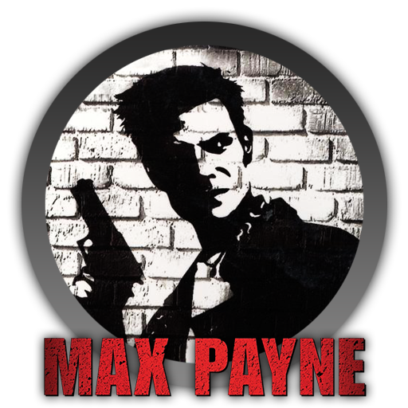

A better way to start gaming.
"I'm Commander Shepard, and this is my favorite store on the Citadel!"- Mass Effect 2
This classic quote comes from the second Mass Effect, in which you can endorse a store on the Citadel for a discount. The player can quickly discover that you can do this for nearly every store on the space station, creating a humorous chorus of the above quote booming out all over the citadel.
"It's time to kick ass and chew bubble gum... and i'm all outta gum."- Duke Nukem
Duke Nukem is the crazy, macho protagonist of the titular game series of FPS games involving crazy aliens, explosions, and more. Duke utters this while blowing aliens away and it just adds to the action, humor, and fast-paced gaming.
"What is a man ? A miserable little pile of secrets!"-Castlevania: Symphony of the Night
Uttered by the infamous Dracula, this quote comes as a melodramatic,somewhat corny, and overblown excalamation before Richter fights Dracula in the prologue of this Castlevania title.
"We're not tools of the government or anyone else. Fighting was the only thing I was good at, but at least I always fought for what I believed in."- Metal Gear Solid
Gray Fox was the intimidating cyborg ninja that becomes Solid Snake's ally throughout the game. A masochistic warrior, Gray Fox is constantly looking for his match when it comes to the battlefield.
The sun went down with practiced bravado. Twilight crawled across the sky, laden with foreboding. I didn't like the way the show started. But they had given me the best seat in the house. Front row center."
Max Payne/ Some character
